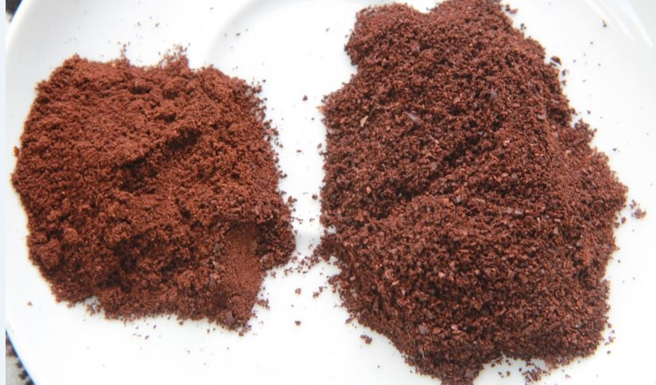
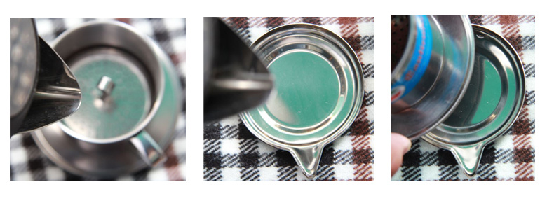
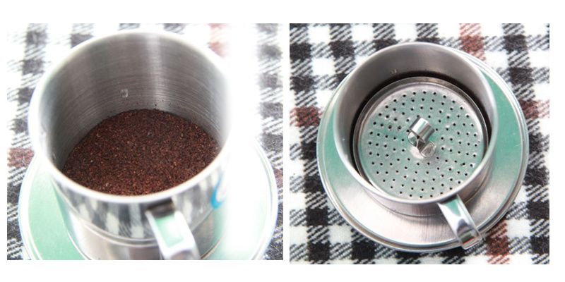
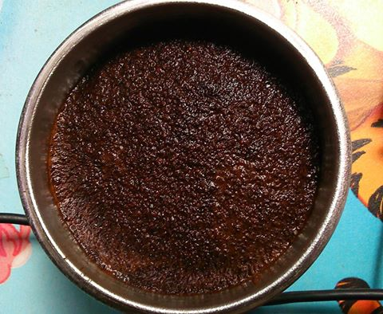
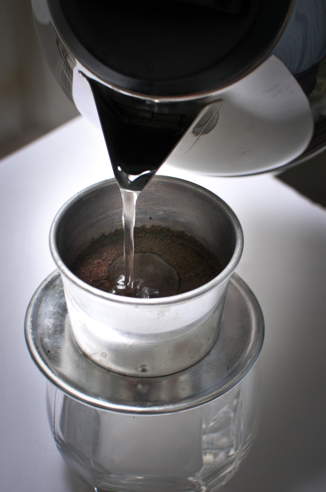
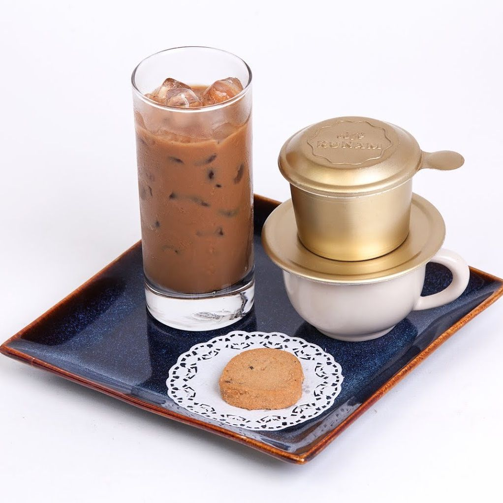

Cách pha cà phê phin tuy không khó nhưng để pha được ly cà phê có hương vị đậm đà bạn cần làm theo đúng phương pháp. Hướng dẫn dưới đây sẽ giúp bạn pha được ly cà phê ngon nhất. Thật vậy, dù hiện nay các loại cà phê phương tây đang dần trở nên phổ biến như Cappuccino, Latte,…được pha từ máy pha cà phê Espresso giúp rút ngắn thời gian pha tuy nhiên cà phê truyền thống được pha tay bằng phin vẫn luôn là sự lựa chọn quen thuộc của các thực khách. Có 2 cách pha cà phê phin phổ biến đó là: phin nhỏ và phin lớn. Hãy cùng Haka Coffee tìm hiểu nhé!
1.Lựa chọn bột cà phê
Trước hết, bạn hãy chọn mua đúng loại cà phê dùng cho pha phin, để bảo vệ sức khỏe của bạn hãy lựa chọn các sản phẩm cà phê sạch và nên cân nhắc đến hàm lượng các loại cà phê sao cho hợp gu nhất với bạn. Cách pha cà phê phin ngon phụ thuộc vào một yếu tố mà ít người quan tâm: đó là bột cà phê. Ở bài viết này Vietblend sẽ không đề cập đến việc chọn cà phê như thế nào để ngon, mà giả sử bạn có nhiều loại bột cà phê nhưng không phải loại nào cũng phù hợp để pha phin.
Hiện nay trên thị trường có rất nhiều loại cà phê xay sẵn, tùy từng nơi họ xay như thế nào thì điều quan trọng nhất bạn cần quan tâm đó là bột cafe phải to như hạt đường, vì nếu mịn quá khi pha bột sẽ theo những lỗ trong phin và rơi xuống ly tạo thành cặn. Không những thế cà phê sẽ rất khó chảy xuống, mịn quá có khi còn không chảy. Với một 1kg cà phê bột, nếu bạn pha cẩn thận sẽ được khoảng 40 ly cà phê.
2. Cách pha cà phê phin
Dụng cụ và nguyên liệu
Cà phê: Sạch, nguyên chất Phin: Nhôm, dày, lỗ đục đều Ly, cốc, tách: Loại sứ (cà phê nóng) Cốc đo ml: 50ml, 100ml, 200ml...
Hướng dẫn cách làm
Trước khi pha cà phê bạn cần đảm bảo phin và ly tách được sạch sẽ và khô ráo, nên tráng qua nước sôi trước khi pha. Hãy sử dụng nước tinh khiết, nước càng tinh khiết ly cà phê của bạn càng ngon. Hãy đảm bảo ly và phin dùng để pha được sạch sẽ, tốt nhất nên tráng qua nước đun sôi. Dùng nước đun sôi ở nhiệt độ 95-100 độ C. – Cách pha dùng cho phin nhỏ (25GR – Tổng thời gian pha khoảng 5 – 7 phút)
Bước 1: Dùng nước sôi tráng qua phin pha cafe để đảm bảo Phin được sạch, bên cạnh đó phin cafe ấm sẽ giúp cafe nở đều hơn và giảm bớt sự hấp thu nhiệt khi pha cà phê.
Bước 2: Cho vào phin 3 muỗng bột cafe (khoảng 25gr) lắc đều
Bước 3: Đặt phin lên cốc tiến hành rót chậm và đều khắp bề mặt phin khoảng 30ml nước sôi (92-98OC) cho cafe nở đều.
Bước 4: Sau 2-3 phút, khi cà phê đã hấp thụ hết nước và bột cà phê nở đều, lúc này bạn nén nắp gài (có thể nén nắp gài trước khi châm nước lần đầu tiên) và tiến hành châm tiếp 50ml nước sôi đậy nắp và chờ đợi. Khoảng 1 phút sau nước cafe sẽ bắt đầu nhỏ từng giọt xuống ly, đợi đến khi cafe nhỏ gần hết bạn ấn chặt nắp gài để chiết xuất hết lượng cà phê còn lại. Cà phê bắt đầu nhỏ từng giọt
Bước 5: Kết quả bạn thu được một lượng 40-45ml nước cốt cafe, có thể cho thêm đường hoặc sữa, đá (tùy theo sở thích của bạn) vào khuấy đều và cuối cùng bạn được thưởng thức một cốc cà phê ngon do chính tay mình vừa pha.